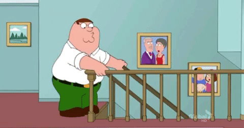
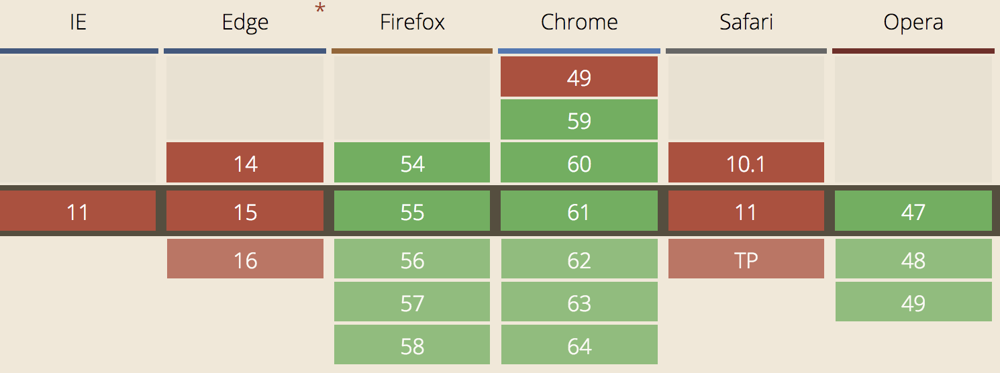
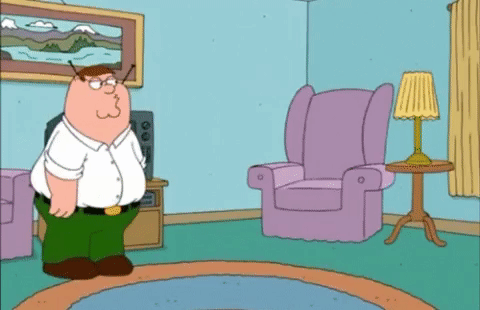
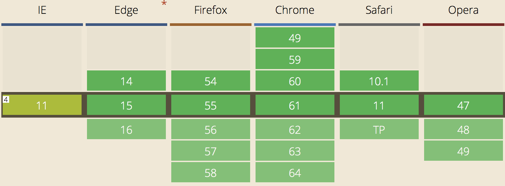
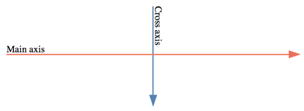
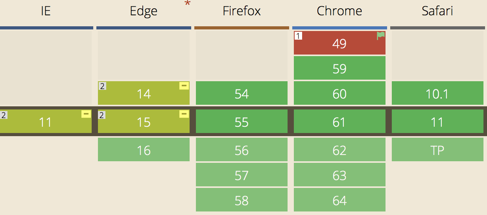
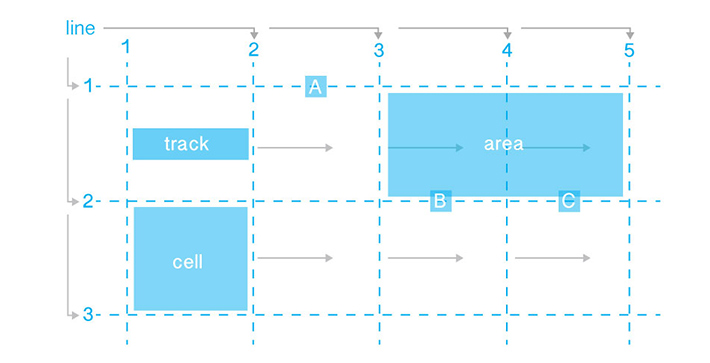

Эволюция раскладки
Николай Птущук
2 блока рядом

Таблицы
<table>
<tr>
<td width="50%"></td>
<td width="50%"></td>
</tr>
</table>
Таблицы. Ожидание
|
Надежный и работающий
|
Раздутый html
Проблема с переносом ячеек
|
Таблицы. Действительность
Таблицы. Как использовать
НИКАК
Картинка + область
<img src="…" alt="…" usemap="#Areamap">
<map name="Areamap">
<area shape="rect" coords="x1,y1,x2,y2" href="#">
<area shape="rect" coords="x1,y1,x2,y2" href="#">
</map>
Картинка + область. Ожидание
Картинка + область. Действительность
Картинка + область. Как использовать
НИКАК
Позиционирование
.left, .right {
position: absolute;
width: 50%;
}
.left { left: 0; }
.right { right: 0; }
Позиционирование. Ожидание
Выпадение из потока
Нет высоты
Пересчёт координат
Позиционирование. Действительность

Позиционирование. Как использовать
НИКАК
Обтекание
.left, .right {
width: 50%;
}
.left { float: left; }
.right { float: right; }
Обтекание. Ожидание
Вариант для старых браузеров
Нет высоты родителя
Перенос элементов
Изменение потока
Обтекание. Действительность
Обтекание. Как использовать
- Задать родителю высоту
- Задать родителю overflow: hidden
- После float использовать св-во clear
- Набор правил clearfix
-
display: flow-root

Строчно-блочные
.left, .right {
width: 50%;
display: inline-block;
}
Строчно-блочные. Ожидание
Все браузеры поддерживают
Общая высота строки
Строчно-блочные. Действительность
Строчно-блочные. Как использовать
- Задать меньше ширину
- Отрицательный margin
- Убрать размер шрифта родителя
- Элементы в одну строку
- Закомментировать отступы
CSS библиотеки
.left, .right {
bootstrap: absolute;
width: 50%;
}
.left { left: 0; }
.right { right: 0; }
CSS библиотеки. Действительность

CSS библиотеки. Как использовать
- если вы не фронтендер
- для прототипов
Флексбокс
.parent {
display: flex;
}
.left, .right {
width: 50%;
}
Флексбокс. Ожидание
Большая вариативность

box, flexbox, flex
Много новых свойств
Флексбокс. Действительность
Флексбокс. Как использовать

- flex-direction
- flex-wrap
- justify-content
- align-items
- align-content
- align-self
- flex-grow
- flex-shrink
- order
Гриды
.parent {
display: grid;
grid-template-columns: 1fr 1fr;
}
Гриды. Ожидание
Очень большая вариативность

Очень много новых свойств
Гриды. Как использовать

Гриды. Как использовать
- grid-template-columns: 1fr 150px
- grid-template-rows: 1fr 150px
- grid-column: 1/4
- grid-row: 2/3
- grid-column-gap: 20px
- grid-row-gap: 20px
- grid-area: 2/1/3/4
- grid-template-areas:
'h h h'
'm m a'
'f f f'
- grid-area: h
- justify-items, align-items, justify-content, align-content
Спасибо. Вопросы?